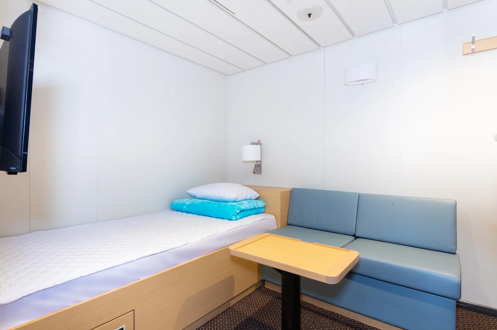

▲ 제주 항로를 오가는 카페리. 차를 실으면 일정 전체가 배 시간에 묶인다 ⓒ 한일고속
제주 여행에서 차는 선택이 아닙니다. 대중교통만으로 다니기에는 동선이 너무 넓습니다.
그래서 질문은 하나로 좁혀집니다. 내 차를 배에 싣고 갈 것인가, 현지에서 빌릴 것인가.
1. 비용 구조가 다릅니다
두 방식은 계산 방식 자체가 다릅니다.
| 방식 | 성격 | 일수와의 관계 |
|---|---|---|
| 차량 선적 | 고정비 — 왕복 운임 | 며칠을 있든 동일 |
| 렌터카 | 변동비 — 일 단위 요금 | 일수만큼 비례 증가 |
그래서 그래프가 어딘가에서 교차합니다. 짧은 일정에서는 렌터카가, 긴 일정에서는 선적이 유리해집니다.
2. 선적 쪽 실제 비용
| 항목 | 내용 |
|---|---|
| 차량 운임(편도) | 아래 차급별 표 참고 — 평일/공휴일 요금이 다름 |
| 구성 | 기본운임 + 유류할증료 + 하역료 + 터미널 시설사용료(약 1,500원) |
| 할증 | 주말·공휴일 6~10% · 성수기 추가 10% 내외 |
| 여객 운임 | 차량 운임에 미포함 — 인원수만큼 별도 |
| 육상 이동 | 거주지 → 항구 연료비·통행료·시간 |
📍 항구까지 가는 비용이 빠지기 쉽습니다
수도권에서 출발한다면 목포·완도까지 4~5시간을 달려야 합니다. 이 구간의 연료비와 통행료, 그리고 시간이 계산에서 빠지는 경우가 많습니다.
영남권이나 호남권 거주자라면 항구가 가까워 유리하지만, 수도권에서는 이 육상 구간이 선적 방식의 가장 큰 부담입니다.

▲ 여객선 터미널. 선적은 배 시간에 맞춰 일정 전체가 묶이는 방식이다 ⓒ 인천광역시 (공공누리 제1유형)
| 차급 | 평일 | 공휴일 |
|---|---|---|
| 경차 (모닝·스파크 등) | 108,740원 | 116,210원 |
| 준중형 (아반떼·K3 등) | 135,940원 | 145,280원 |
| 중형 SUV (쏘렌토·투싼·스포티지) | 163,040원 | 174,250원 |
| 대형 밴 (카니발·스타렉스) | 217,560원 | 232,510원 |
| 자전거 | 3,000원 | |
📍 차급 구분을 확인하세요
운임표의 차급은 배기량이 아니라 차체 크기 기준입니다. 쏘렌토·투싼·스포티지가 같은 구간에 묶이고, 카니발과 스타렉스는 한 단계 위입니다.
루프박스나 캠핑 장비를 얹어 전장·전고가 커지면 상위 요금이 적용될 수 있습니다. 캠핑카는 5~7m 구간에서 24만~46만 원대로 크게 올라갑니다.

▲ 카페리 객실. 차량 탁송 요금에는 사람 표가 포함되지 않아 여객 승선권을 따로 사야 한다 ⓒ 한일고속
3. 렌터카 쪽 실제 비용
렌터카는 표시 요금 외에 붙는 항목이 있습니다.
| 항목 | 내용 |
|---|---|
| 대여료 | 차종·시즌별 일 단위 |
| 보험(자차) | 완전자차와 일반자차의 면책금 차이 확인 |
| 연료 | 반납 조건(만충·동일 수준) 확인 |
| 운전자 추가 | 공동 운전자 등록 시 추가 요금 |
성수기 변동 폭이 큽니다. 같은 차종이 비수기와 성수기에 두세 배 차이가 나기도 합니다. 이 때문에 손익 분기점 자체가 시즌에 따라 이동합니다.
4. 어디서 갈리나
선적은 왕복 27만~33만 원대의 고정비로 시작합니다(준중형~중형 SUV, 평일 기준). 여기에 여객 운임과 육상 이동이 더해집니다.
| 체류 | 유리한 쪽 | 이유 |
|---|---|---|
| 2~3일 | 렌터카 | 선적 고정비를 회수하기 어려움 |
| 4~6일 | 경계 구간 | 시즌·차종·인원에 따라 갈림 |
| 1주 이상 | 내 차 선적 | 렌터카는 계속 늘고 선적은 고정 |
📍 비용만으로 정해지지 않습니다
짐이 많은 여행이라면 내 차 쪽이 압도적으로 편합니다. 캠핑 장비, 유아용 카시트, 골프백처럼 부피가 큰 짐을 옮기지 않아도 됩니다.
반대로 배 시간에 일정이 묶인다는 점은 선적의 단점입니다. 기상으로 결항되면 일정 전체가 흔들립니다. 렌터카는 항공편만 살아 있으면 됩니다.
5. 전기차는 변수가 하나 더 있습니다
내 차가 전기차라면 계산에 선적 제한이 추가됩니다. 배터리 충전율이 50%를 넘으면 선적이 거부됩니다.
또한 최소 출항 1시간 30분 전 도착해야 하고, 외관에 충돌 흔적이 있거나 사고 이력이 있으면 선적이 제한될 수 있습니다.

▲ 전기차를 싣고 간다면 충전율 50% 이하로 도착해야 하고, 도착 직후 충전할 지점을 미리 확보해야 한다 ⓒ 현대자동차 제공
제주는 전기차 충전 인프라가 비교적 잘 갖춰진 편이지만, 50% 이하로 도착한다는 전제는 그대로입니다. 항구 인근과 숙소 인근 충전 지점을 함께 잡아두는 편이 안전합니다.
6. 결정 전에 확인할 것
| 조건 | 권장 |
|---|---|
| 체류 3일 이하 | 렌터카 |
| 체류 1주 이상 | 내 차 선적 |
| 짐이 많음 | 내 차 선적 |
| 항구가 멂(수도권 등) | 렌터카 쪽으로 기움 |
| 일정이 빡빡함 | 렌터카 — 결항 위험 회피 |
| 전기차 | 충전율 50% 조건까지 계산 |
7. 정리
차량 선적은 고정비, 렌터카는 일수 비례 변동비입니다. 그래서 체류가 짧으면 렌터카, 길면 내 차가 유리해집니다.
제주 항로 평일 편도 운임은 경차 10만 8,740원, 아반떼급 13만 5,940원, 쏘렌토·투싼급 16만 3,040원, 카니발급 21만 7,560원입니다. 공휴일에는 각각 11만 6,210원 · 14만 5,280원 · 17만 4,250원 · 23만 2,510원으로 오릅니다. 여객 운임은 인원수만큼 따로입니다.
계산에서 자주 빠지는 것이 항구까지의 육상 이동입니다. 수도권에서는 이 구간이 선적 방식의 가장 큰 부담입니다. 전기차라면 충전율 50% 이하 선적 제한과 출항 1시간 30분 전 도착 조건까지 함께 계산해야 합니다.